تسجيل المصاريف من رسائل البنك على iPhone
لتسجيل مصاريفك من رسائل البنك على iPhone، أنشئ في تطبيق «الاختصارات» تحكمًا تلقائيًا يعمل عند وصول رسالة تتضمن كلمة من تنبيهات بنكك، ويمرّر نصها إلى إجراء «استيراد رسالة البنك» في TrackExpenses. بعدها تُسجَّل كل عملية شراء وحدها، وتراجعها في التطبيق متى شئت.
ما تحتاجه
- iPhone يعمل بنظام iOS 17 أو أحدث، وعليه تطبيق «الاختصارات» من Apple.
- تطبيق TrackExpenses مثبّتًا على الجهاز نفسه.
- أن يرسل لك بنكك تنبيهًا نصيًا (SMS) مع كل عملية.
الصور في هذا الدليل من iOS 27. في iOS 26 وما قبله تختلف الشاشات وبعض الخطوات، وتجد الخطوات المناسبة لنظامك داخل التطبيق: المزيد ← تسجيل رسائل البنك تلقائيًا.
اختر كلمة التصفية
التحكم التلقائي يعمل فقط مع الرسائل التي تتضمن نصًّا تختاره أنت. اختر كلمة تظهر في كل تنبيهات بنكك، من شراء وسحب وراتب، ولا تكاد تظهر في رسائلك الشخصية. رمز العملة مثل AED أو SAR أو EGP يصلح غالبًا، لأن البنك يكتبه مع كل مبلغ. وإن كان بنكك يكتب تنبيهاته بالعربية فاختر اسم العملة كما يكتبه، مثل «درهم» أو «ريال» أو «جنيه». وتجنّب كلمة «خصم»، فهي تأتي في رسائل العروض أيضًا. ولا تحدد مرسلًا بعينه، فالبنوك تغيّر اسم المرسل أحيانًا.
الإعداد خطوة بخطوة
الخطوات الثماني عشرة التالية تُنفَّذ مرة واحدة، وتأخذ بضع دقائق. كلمة «شراء» في الصور مجرد مثال.
ابدأ من «المكتبة»
افتح الاختصارات. ارجع إلى «المكتبة»، ثم اختر «التحكم التلقائي».
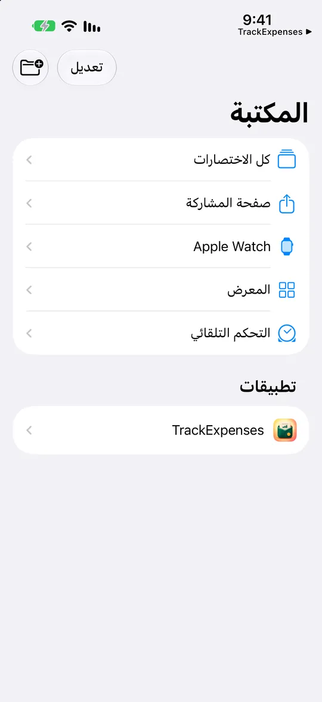
أنشئ اختصارًا جديدًا
اضغط + في الأسفل. في iOS 27 يوجد التحكم التلقائي داخل الاختصارات.
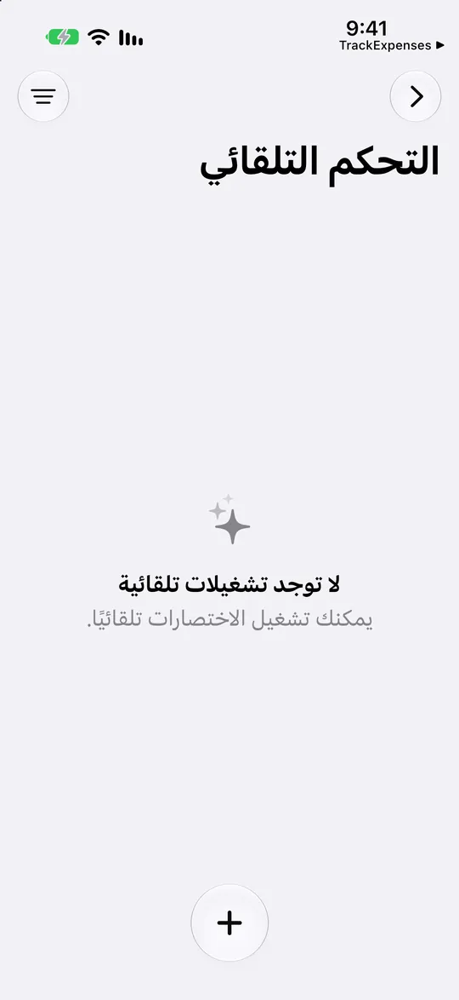
افتح المحرر
إن فُتحت شاشة «صف اختصارًا»، فاضغط «المحرر» أو «تعديل». ثم اضغط «التحكم التلقائي» في لوحة الإجراءات.
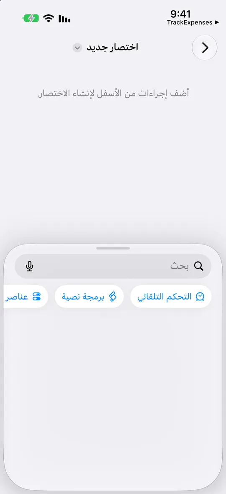
اختر «رسالة»
ضمن «التواصل»، اضغط «رسالة» لإضافة مشغّل الرسائل الواردة.
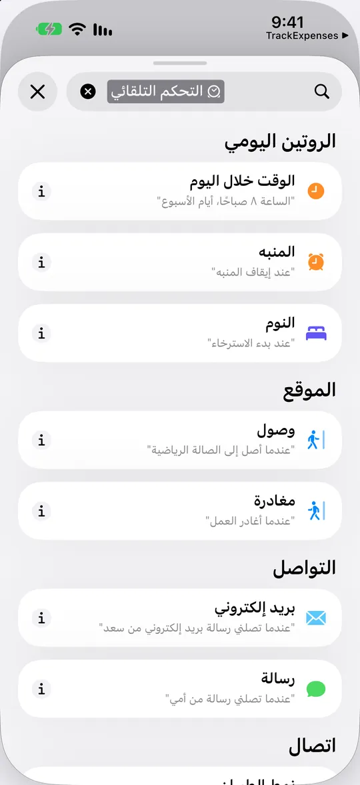
غيّر حقل التصفية
اضغط حقل «المرسل» الأزرق الأول. فهذا يحدد أي جزء من الرسالة تتم مطابقته.
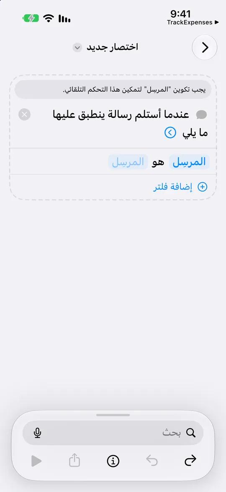
طابِق نص الرسالة
اختر «رسالة» من القائمة. يصبح الشرط: «رسالة» تتضمن «نص».
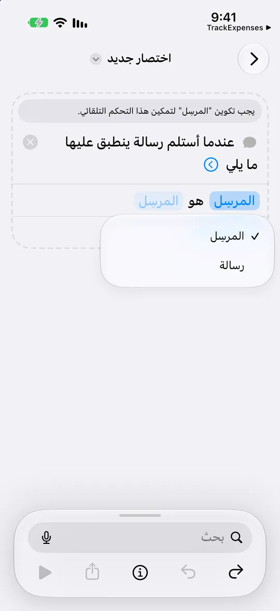
استخدم صياغة بنكك
اضغط «نص» وأدخل كلمات من تنبيهات بنكك. كلمة «شراء» مجرد مثال. ثم اضغط السهم الأزرق للمشغّل.
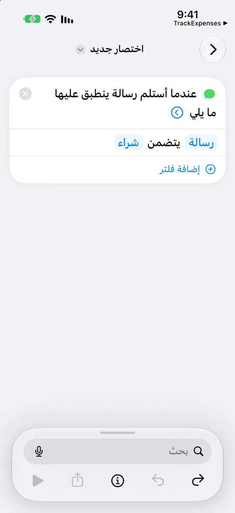
دعه يعمل تلقائيًا
أبقِ «التحكم التلقائي» مفعّلًا و«التأكيد قبل التشغيل» معطّلًا. هذان يحلّان محل شاشة «تشغيل مباشرة» القديمة.
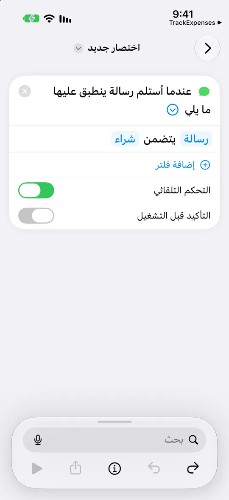
ابحث عن إجراء الاستيراد
اضغط «بحث» واكتب TrackExpenses، ثم اختر «استيراد رسالة البنك».
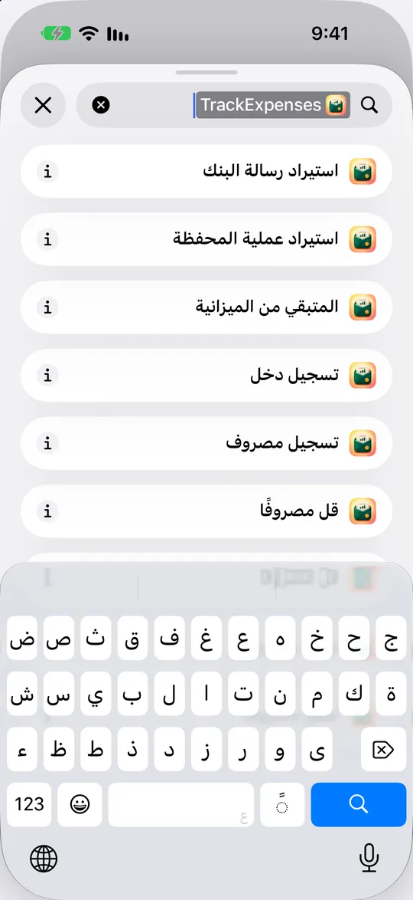
اربط النص الوارد
اضغط العنصر الأزرق «رسالة» داخل “استيراد عملية من رسالة”.
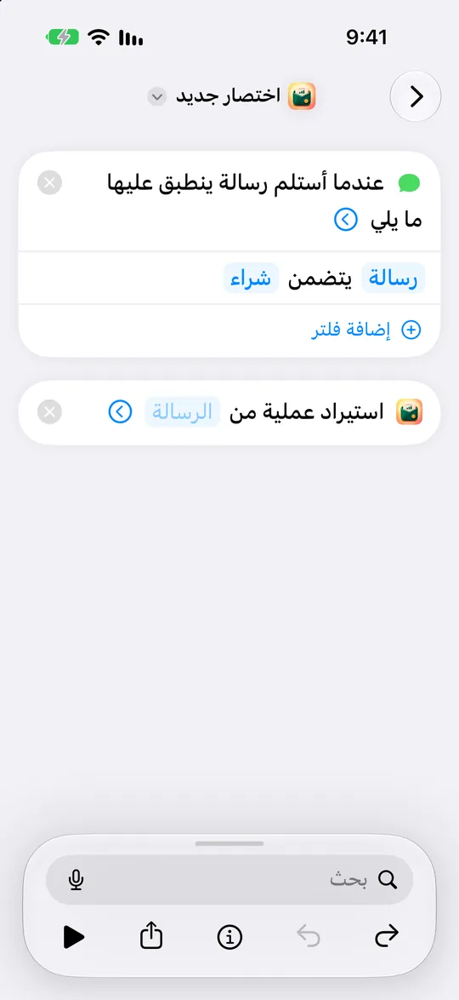
افتح «تحديد متغير»
اضغط «تحديد متغير» في الشريط السفلي. لا تكتب رسالة ولا تستخدم «السؤال في كل مرة».
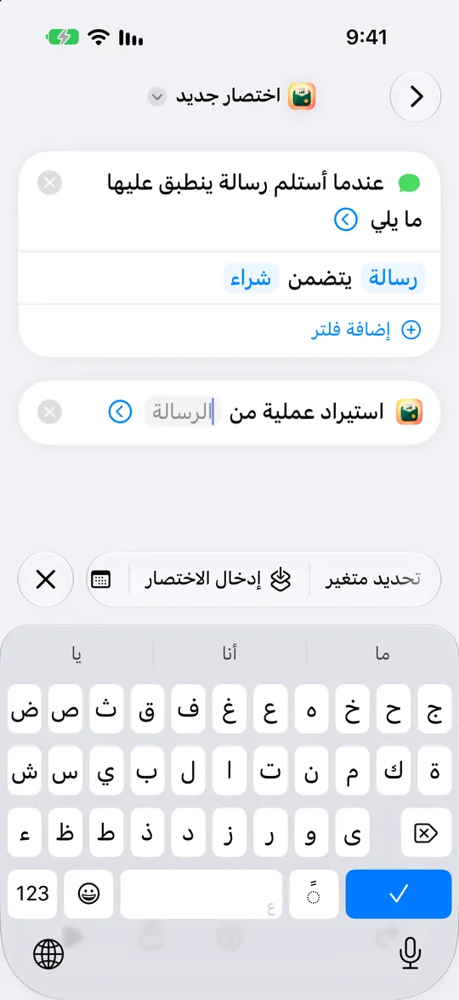
اختر «رسالة» الخاصة بالمشغّل
اضغط «رسالة» أسفل المشغّل مباشرةً. في iOS 27 هذا هو ناتج الرسالة الواردة.
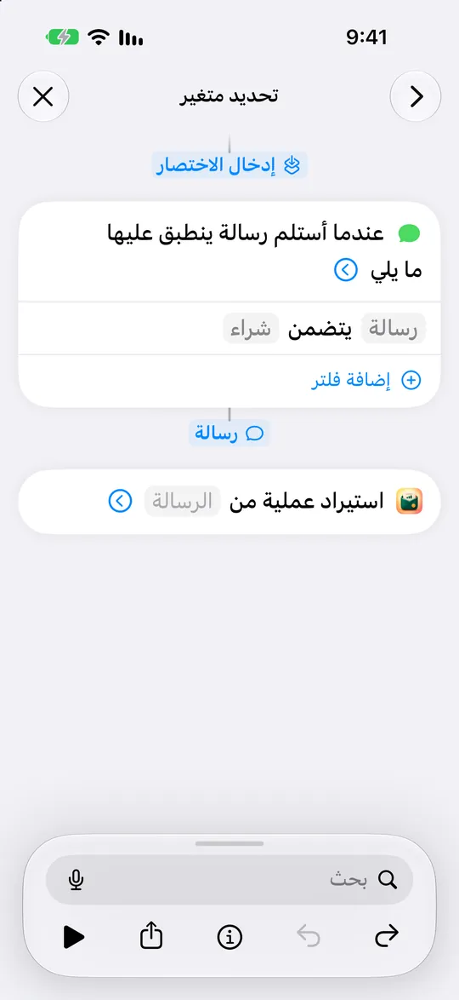
استخدم نص الرسالة
أغلق الشريط السفلي بالزر ×. ثم اضغط على متغير «رسالة» المُدرج لعرض خصائصه.
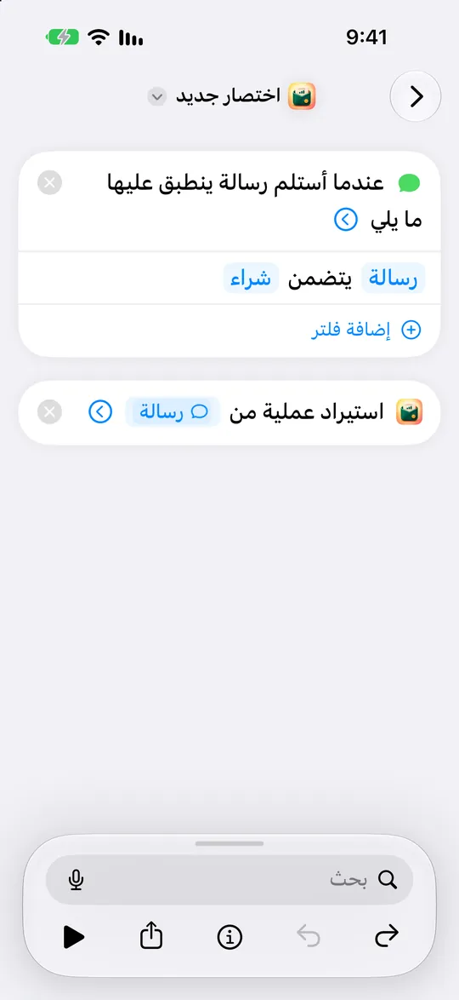
اختر «المحتوى»
في قائمة «إحضار» الخاصة بالمتغير، اختر «المحتوى». اضغط «رجوع»، ثم أغلق شريط المتغير بالزر ×.
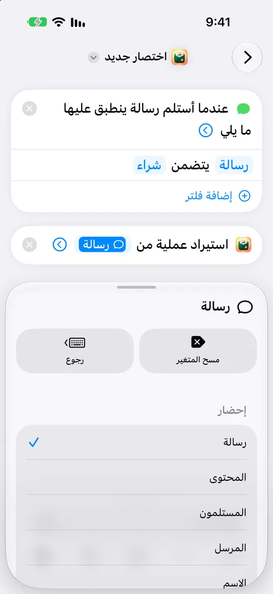
اجعل الاستيراد بلا تنبيهات
وسّع السهم الأزرق لإجراء الاستيراد وعطّل «إظهار عند التشغيل». يجب أن يظهر في المتغير المتصل «المحتوى».
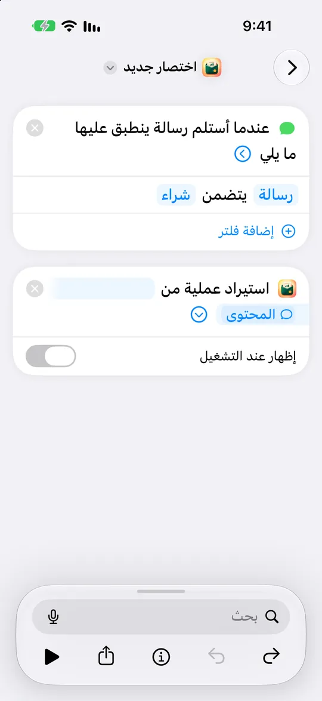
تحقّق من خصوصية الاختصار
اضغط زر ⓘ في شريط أدوات المحرر، ثم افتح «الخصوصية».
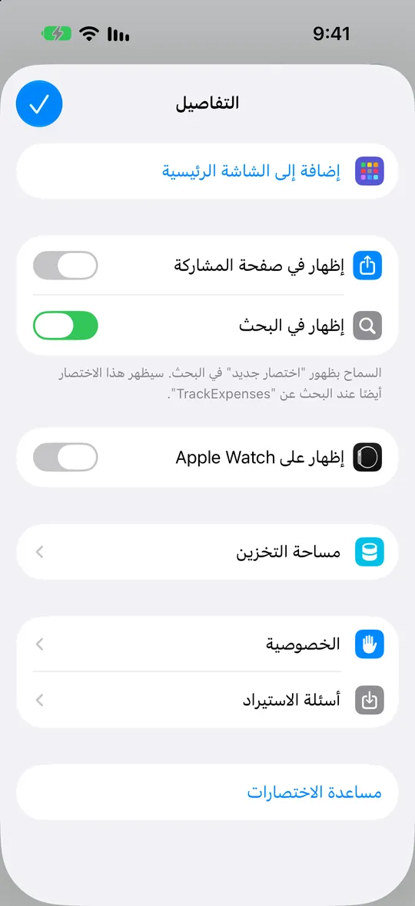
اسمح بتشغيله عند القفل
أبقِ «السماح بالتشغيل عند القفل» مفعّلًا. عد إلى «التفاصيل»، واضغط «تم»، ثم ارجع لحفظ الاختصار.
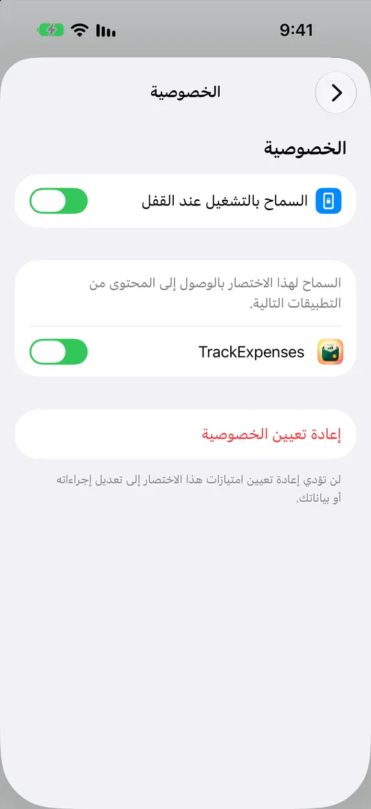
جاهز لتنبيهك البنكي التالي
تأكد أن التحكم التلقائي مفعّل، ثم تابع التنبيه المطابق التالي في TrackExpenses ← المزيد ← تسجيل رسائل البنك تلقائيًا.
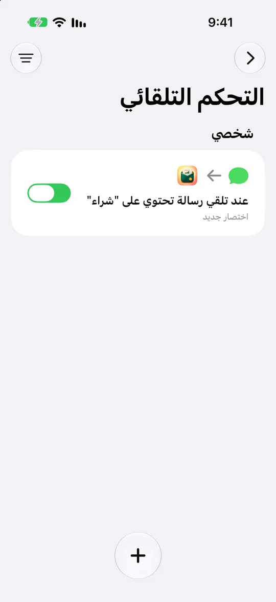
ماذا يحدث بعد الإعداد
عند وصول تنبيه مطابق يقرأ TrackExpenses المبلغ والمتجر والتاريخ والبطاقة، ويسجّل العملية في الحساب الذي تنتهي بطاقته بالأرقام نفسها إن كنت ربطتها، ويقترح فئة مما تعلّمه من عملياتك السابقة. ما يحتاج إلى مراجعة يظهر في بطاقة أعلى القائمة اليومية.
- رموز التحقق والعمليات المرفوضة والعروض الترويجية لا تُسجَّل.
- الراتب والمبالغ الواردة تُسجَّل دخلًا وتُعلَّم للمراجعة، ويمكنك إيقاف ذلك من مفتاح «استيراد الأموال الواردة».
- العملية بعملة أجنبية لم تحدد لها سعر صرف من قبل تنتظر حتى تحدده، فلا تدخل مجاميعك بسعر خاطئ.
- iOS يعرض إشعاره الخاص عند كل تشغيل للتحكم التلقائي. هذه قاعدة من Apple ولا يستطيع أي تطبيق إخفاءها.
10 رسائل ناجحة مجانًا كل شهر ميلادي على كل جهاز. ما يصل بعدها يُحفظ خارج مجاميعك ولا يضيع: يضيفه كله الاشتراك في Pro، وإلا فحصة الشهر القادم المجانية تضيف منه بقدر ما تتسع.
إن لم تُسجَّل رسالة
- افتح المزيد ← تسجيل رسائل البنك تلقائيًا، والصق الرسالة في بطاقة «جرّب إحدى رسائل بنكك». ستعرف فورًا هل قُرئت، وما السبب إن لم تُقرأ.
- تأكد أن التحكم التلقائي مفعّل، وأن «التأكيد قبل التشغيل» معطّل.
- تأكد أن المتغير داخل إجراء الاستيراد هو «رسالة» الخاصة بالمشغّل، وأنه يعرض «المحتوى» (الخطوات 10 إلى 15).
- تأكد أن كلمة التصفية مكتوبة كما يكتبها بنكك تمامًا.
وأي رسالة لم تُقرأ يمكنك نسخها ثم الضغط على «لصق» في شاشة العمليات، فتُعبّأ العملية لتراجعها وتحفظها.
الخصوصية
TrackExpenses لا يقرأ صندوق رسائلك، فـ iOS لا يسمح بذلك لأي تطبيق. وإنما يمرّر التحكم التلقائي الذي أعددته نص الرسالة المطابقة وحدها إلى التطبيق. يُقرأ النص على جهازك، ويُحفظ ما قُرئ منه (المبلغ والجهة والتاريخ) في سجلّك، ولا يُحفظ نص الرسالة نفسه. لا يوجد اتصال ببنكك ولا حساب في التطبيق.
أسئلة شائعة
هل يقرأ التطبيق كل رسائلي؟
لا. تصله فقط الرسائل التي تطابق الكلمة التي اخترتها في التحكم التلقائي، وأنت من يعدّه ويستطيع إيقافه أو حذفه في أي وقت من تطبيق «الاختصارات».
هل يفهم تنبيهات البنك المكتوبة بالعربية؟
نعم. يقرأ التنبيهات بالعربية والإنجليزية، بالأرقام العربية أو الهندية، ويعرف صيغ الشراء والخصم والسحب والتحويل والإيداع الشائعة في الخليج ومصر. ولا يمكن ضمان كل بنك، فجرّب إحدى رسائل بنكك أولًا.
كم رسالة يسجّلها التطبيق مجانًا؟
10 رسائل ناجحة كل شهر ميلادي على كل جهاز. ما يزيد يُحفظ ولا يُحذف: يضيفه كله الاشتراك في Pro، وإلا فحصة الشهر القادم المجانية تضيف منه بقدر ما تتسع.
للمزيد
TrackExpenses بالعربية: كل المزايا
وبالإنجليزية:
- Arabic Bank SMS Expense Tracking on iPhone
- Fix Bank SMS Automation on iPhone
- SMS Auto-Import Setup: iOS 27 and 26
مصاريفك أوضح، وشهرك تحت نظرك.
تتبع المصاريف: ميزانية الراتب، لـ iPhone وiPad.
معلومات التطبيق وحدود المجاني وPro
تتبع المصاريف: ميزانية الراتب (TrackExpenses) تطبيق من تطوير Mohamed Elatabany لأجهزة iPhone وiPad بنظام iOS وiPadOS 17 أو أحدث، بالعربية والإنجليزية وبواجهة عربية كاملة من اليمين إلى اليسار. لا يتطلب حسابًا في التطبيق ولا الدخول إلى حسابك البنكي. تحكم تلقائي اختياري في «الاختصارات» يسجّل تنبيهات البنك المدعومة ومشتريات المحفظة، والتطبيق لا يقرأ صندوق رسائلك. الإدخال الصوتي يُنشئ مسودات على جهازك نفسه، في الأجهزة واللغات التي تدعمه. السجلّ المجاني يشمل عمليات يدوية بلا حدود، والميزانيات ونقل المال بينها في الفترة الحالية، والإحصاءات والبحث وتصدير CSV الشهري والمزامنة عبر iCloud الخاص بك، مع 3 حسابات وقاعدتي تكرار، و10 إدخالات صوتية محفوظة و10 رسائل بنكية ناجحة كل شهر ميلادي على كل جهاز. المدرّب المالي يقرأ آخر شهر ميزانية ويقترح حدًّا واحدًا، وأسئلته المفتوحة تذهب إلى Claude من Anthropic عبر خادم وسيط للمطوّر بعد موافقة المستخدم فقط، مع ما سبق في المحادثة وملخص لهذا الشهر والشهر الماضي، وعند طلب المدرّب مجاميع حتى 13 شهرًا أو حتى 20 عملية شراء بتاريخها ومتجرها وفئتها ومبلغها، ودون الملاحظات أو الإيصالات أو أسماء الحسابات وأرقامها أو الأرصدة (10 أسئلة مجانًا كل شهر على كل جهاز). التنبيهات التي تتجاوز الحصة المجانية تُحفظ خارج المجاميع ولا تُحذف: يضيفها كلها Pro، وإلا فحصة الشهر التالي تضيف منها بقدر ما تتسع. يضيف Pro الإدخال الصوتي وتسجيل رسائل البنك والحسابات والعمليات المتكررة بلا حدود، وتحدّيات المدرّب، وخطة الراتب، والتوقعات والميزانية اليومية، واستيراد CSV والتصدير لأي فترة والنسخ الاحتياطي الكامل، والسمات والأيقونات البديلة، باشتراك شهري أو سنوي أو بشراء لمرة واحدة. الأرقام والتوقعات مبنية على ما تسجّله، وليست نصيحة مالية.